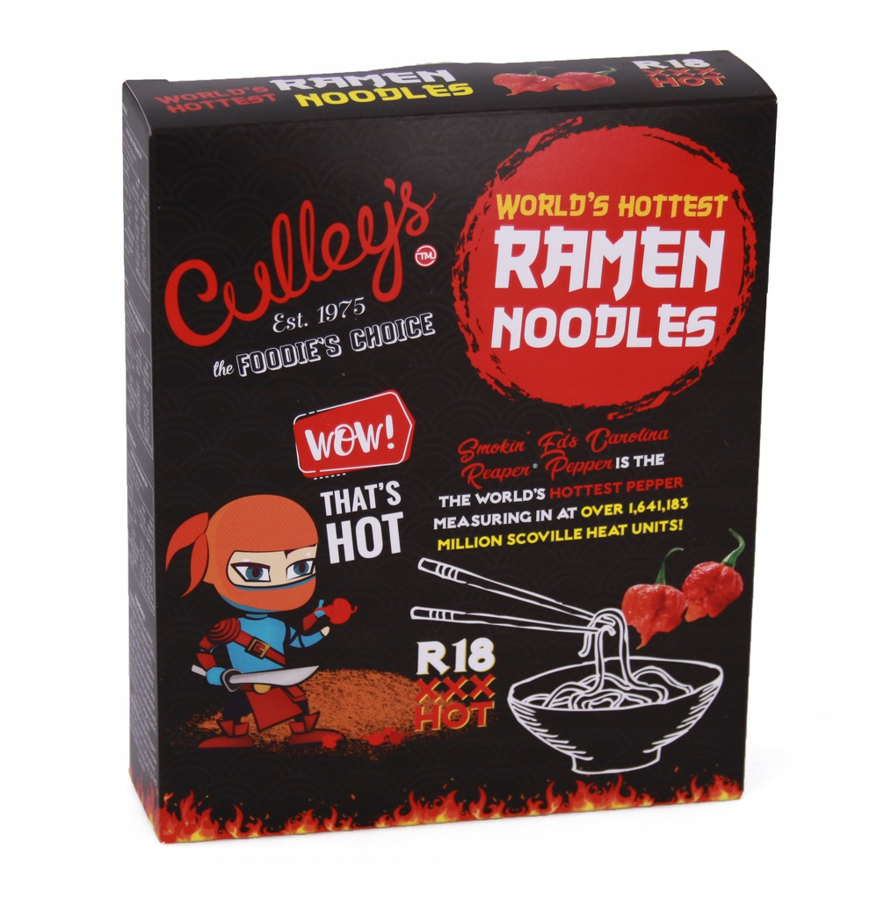
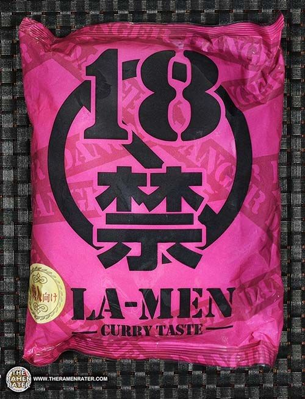
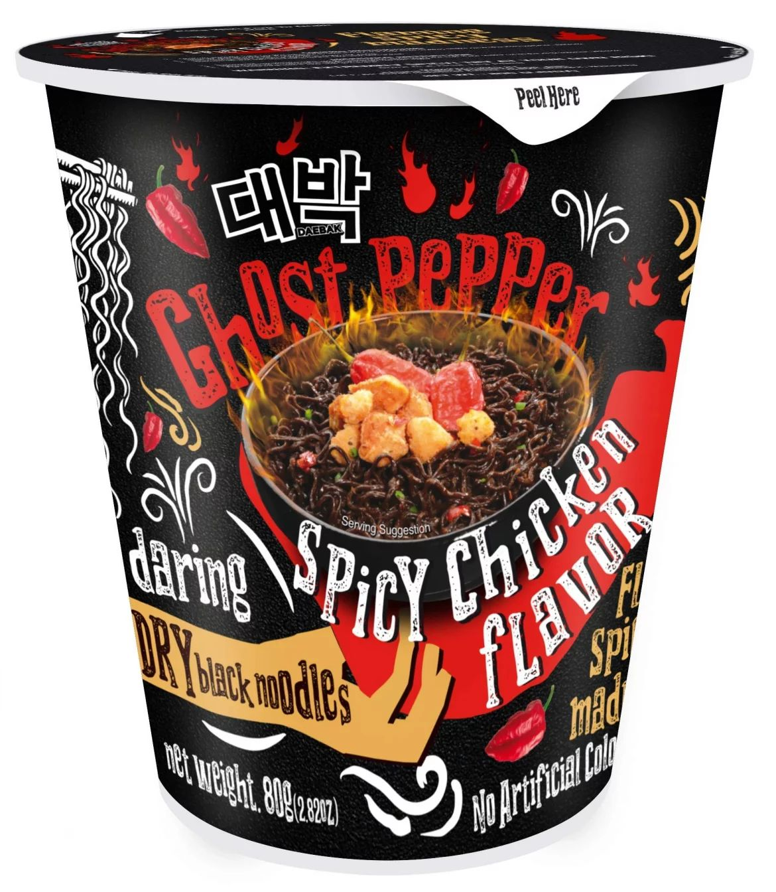
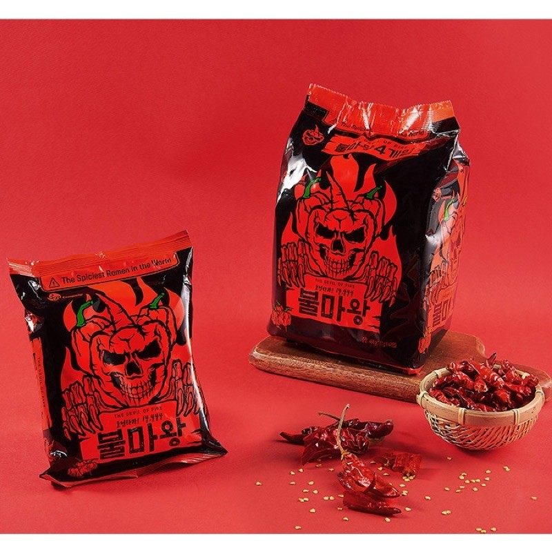
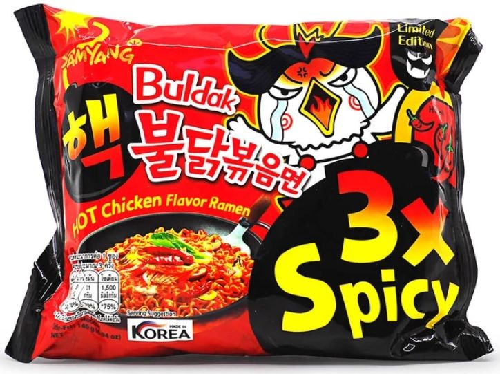

Web ini akan menampilkan 5 mie instant terpedas didunia
Mie instan terpedas di dunia dengan skala kepedasan mencapai 1.641.183 SHU. Sayangnya mie instan ini sudah tidak diproduksi lagi. Namanya Culley's yang berasal dari Selandia Baru. Mie instan kuah ini dibuat dengan cabe Carolina Reaper yang dinobatkan sebagai cabe terpedas di dunia. Saking pedasnya produk ini disebut tak akan ada yang sanggup menghabiskannya. Hal ini karena Carolina Reaper dalam jumlah banyak bisa membuat seseorang alami efek samping seperti rasa sakit yang luar biasa di mulut, tenggorokan, dan mata.
Di Jepang pernah hadir mie instan pedas merek Isoyama Shoji Instant Ramen dengan skala kepedasan lebih dari 1 juta SHU. Namun produk ini sudah tidak diproduksi lagi. Rasa yang dihadirkan adalah kari yang pedas dan berempah. Rasa pedasnya berasal dari penggunaan bhut jolokia alias ghost pepper, salah satu varian cabe terpedas di dunia.
Ciri khasnya, mie instan ini berwarna hitam dengan kemasan 'menyeramkan' didominasi warna merah menyala dan hitam. MAMEE's Daebak Ghost Pepper Spicy Chicken Noodles banyak dijadikan bahan tantangan makan dan mudah diperoleh di indonesia dengan harga per cup sekitar Rp 15.000an saja.
Mie instan ini lebih pedas lagi karena mencapai 14.444 SHU. Namanya Mukbang Bulmawang Ramen yang merupakan produk asal Korea Selatan. Rasa pedasnya disebut lebih parah 2 kali lipat dari pada Samyang. Rasa pedas tersebut berasal dari penggunaan cabe terpedas di dunia, Carolina Reaper pada racikan kaldunya. Saat dimasak, terlihat warna kaldunya merah gelap. Rasa pedasnya seperti makan sup kimchi tapi ditambah sangat banyak cabe.
Varian Samyang 3X Spicy Buldak Ramen patut dicoba penggemar pedas karena skala kepedasannya mencapai 13.200 SHU!. Ciri khasnya ada pada saus berwarna merah gelap dan 'meledak' pedasnya di mulut.
